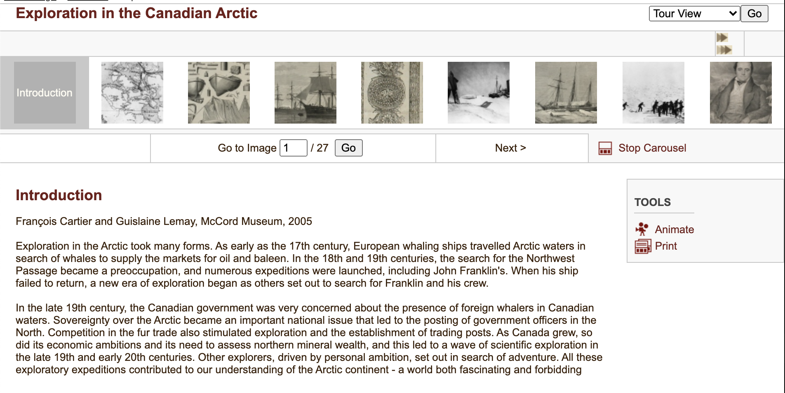

McCord Museum
McCord Museum hosts a collection of materials linked to the Canadian history and culture.
Content
The museum's collection contains objects of all epochs and of various entity: from photographies to manuscripts, from clothes to toys. In this expedition, we will explore principally the archive section.
Homepage
The homepage of the online archive gives the instruments to search a specific object, like a search bar and some quick link. The main part of the page contains links to articles relative to each section, like Documentary Art or Marterial Culture. To each collection is associated a numeric data indicating how many objects are classified with that label: clicking on it it's possible to access to their list.
Metadata
Many metadata are used to classify the content:
- type of artefact
- title
- id
- owner
- original title
- keywords
Clicking on a object, a page containing a short textual description is available. An image is generally available.
The visitor can add a comment, but this function hasn't been used.
An interesting feature is the possibility to save a set of 'selected images' by clicking on the button 'select image'.
The museum also sells the reproductions of the visual materials.
Thematic tours
A section called Thematic Tours allows to deepen some topic, like the explorations in the Canadian Arctic. A thematic tour consist in a web tour, a video and some flash content at the moment inaccessible because of the current abandonment of this technology.
The web tours are a sort of navigable slideshow whose first element is a textual introduction, followed by a series of objects present in the archive, without more information. Many of the features of the website are disabled because it uses flash.
It's Google
Since Google owns the project, all the resources are built via some Google API. The website also follows the material design principles ideated for and by the company.
Games
There was the possibility to play some didactic game, but also them are in flash.
Comment
The age of this archive is evident. It seems there was an intention to encourage the visitor to interact with contents, but in a quite naïve way, for this times. The presentation of the contents isn't so interesting, and we get the feeling that the web archive is made to sell the reproductions.
In many cases there is no additional description and many links are broken. It's not clear if the Museum is going to renew it like the or not. In fact, we can notice that the website part relative to the Museum and the visits has been recently restyled.